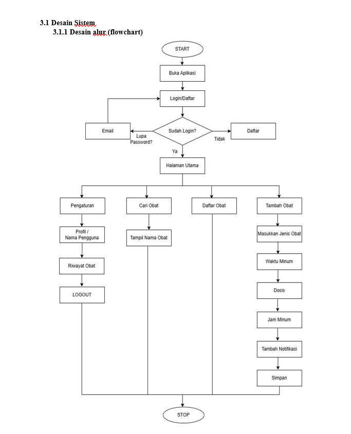
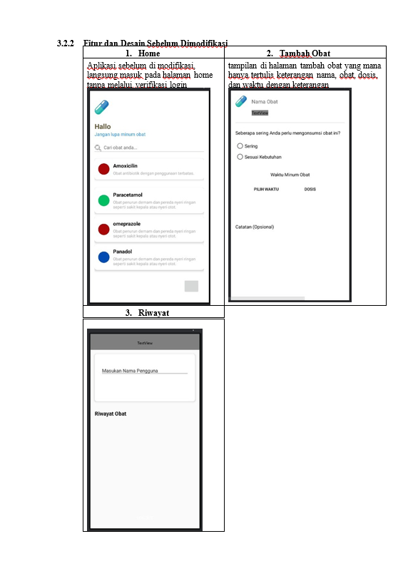
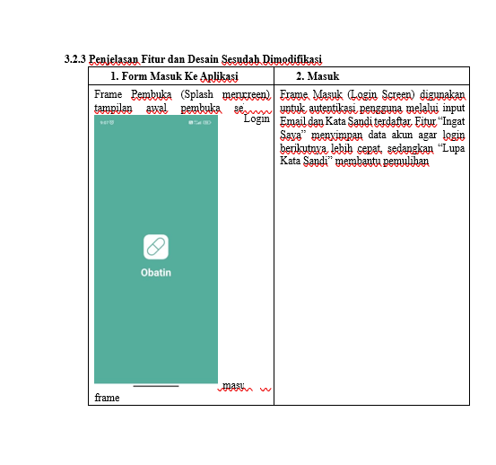
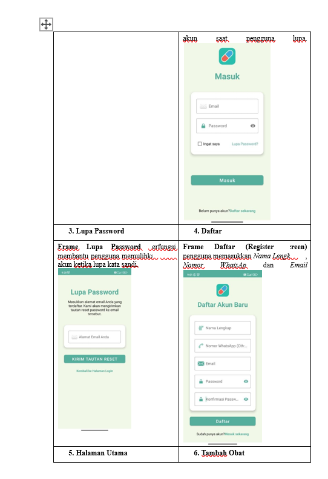
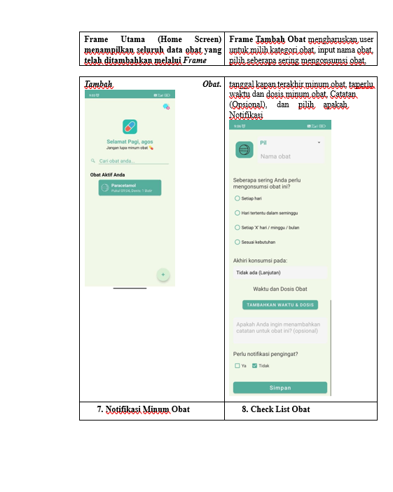
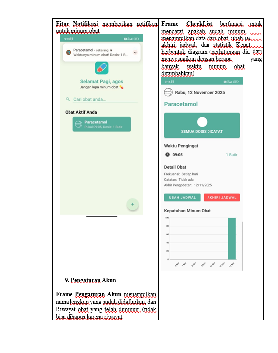
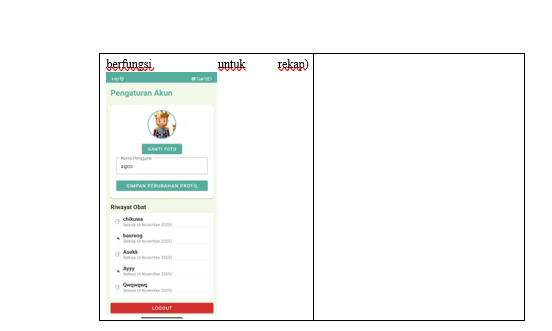

Kesehatan merupakan kebutuhan dasar manusia yang harus dijaga sepanjang hidup. Salah satu faktor penting dalam menjaga kesehatan adalah kepatuhan terhadap konsumsi obat sesuai dengan dosis dan jadwal yang dianjurkan oleh tenaga medis. Namun dalam kenyataannya, banyak pasien yang sering lupa meminum obat tepat waktu karena kesibukan sehingga lupa akan kondisi tubuh yang memerlukan mengonsumsi obat tepat waktu. Kondisi ini menyebabkan efektivitas pengobatan menurun dan memperlambat proses penyembuhan. Dengan berkembangnya teknologi informasi, terutama pada platform mobile, muncul peluang besar untuk membantu masyarakat mengelola jadwal konsumsi obat secara lebih efisien. Aplikasi mobile kini dapat digunakan sebagai asisten pribadi yang membantu pengguna mengatur jadwal minum obat, mencatat riwayat penggunaan, dan memberikan pengingat otomatis sesuai waktu yang diatur.
Berdasarkan kebutuhan tersebut, dikembangkanlah aplikasi “Obatin”, yaitu aplikasi pencatat dan pengingat konsumsi obat yang dirancang untuk membantu pengguna agar tidak lupa minum obat sesuai waktu dan dosis yang benar. Aplikasi ini juga menyimpan data riwayat konsumsi obat, sehingga pengguna dapat memantau keteraturan pengobatannya secara mandiri. Melalui aplikasi ini, diharapkan pengguna dapat lebih disiplin dalam menjalani terapi, meningkatkan efektivitas pengobatan, dan mendukung gerakan digitalisasi kesehatan masyarakat di era modern.
Aplikasi mobile kini dapat digunakan sebagai asisten pribadi yang membantu pengguna mengatur jadwal minum obat, mencatat riwayat penggunaan, dan memberikan pengingat otomatis sesuai waktu yang diatur. Berdasarkan kebutuhan tersebut, dikembangkanlah aplikasi “Obatin”, yaitu aplikasi pencatat dan pengingat konsumsi obat yang dirancang dengan tujuan untuk membantu pengguna agar tidak lupa minum obat sesuai waktu dan dosis yang benar. Aplikasi ini juga menyimpan data riwayat konsumsi obat, sehingga pengguna dapat memantau keteraturan pengobatannya secara mandiri. Melalui aplikasi ini, diharapkan pengguna dapat lebih disiplin dalam menjalani terapi, meningkatkan efektivitas pengobatan, dan mendukung gerakan digitalisasi kesehatan masyarakat di era modern
Pengembangan aplikasi pencatat dan pengingat konsumsi obat, Obatin, menjadi penting karena beberapa alasan mendasar, terutama dalam mengatasi tantangan kepatuhan dan manajemen data kesehatan pribadi:
Aplikasi Obatin adalah aplikasi mobile berbasis Android yang dirancang untuk membantu pengguna dalam mencatat, mengatur, dan mengingat jadwal konsumsi obat secara lebih teratur. Aplikasi ini dikembangkan sebagai versi perbaikan dan peningkatan dari aplikasi sumber. Tujuan utama proyek ini adalah menyediakan solusi digital yang praktis, yaitu sistem pengingat dan pencatat konsumsi obat berbasis Android, untuk meningkatkan disiplin pengguna dalam menjalani terapi dan mengoptimalkan proses penyembuhan.
Aplikasi Obatin bertujuan untuk meningkatkan kepatuhan pengguna terhadap jadwal pengobatan yang telah ditentukan, sehingga proses penyembuhan dapat berjalan lebih efektif dan efisien. Aplikasi ini juga dilengkapi dengan fitur riwayat konsumsi obat dan statistik penggunaan, yang memungkinkan pengguna untuk meninjau kebiasaan minum obat mereka dan memantau perkembangan terapi secara menyeluruh.
Analisis kebutuhan dilakukan untuk memastikan aplikasi Obatin mampu menjadi solusi digital yang praktis dalam membantu masyarakat menjaga keteraturan konsumsi obat sehari-hari. Aplikasi ini memiliki peranan penting bagi berbagai pihak, dengan kebutuhan yang diidentifikasi sebagai berikut:
Aplikasi Obatin dikembangkan berdasarkan Obataja dengan sejumlah pembaruan dan peningkatan fitur yang mengatasi kekurangan aplikasi sumber. Kekurangan Obataja meliputi belum adanya fitur riwayat konsumsi obat harian, statistik kepatuhan, dan desain antarmuka yang sederhana.
Fitur yang akan ditambahkan dan ditingkatkan dalam Obatin meliputi:
Perbaikan struktur database dalam perancangan aplikasi Obatin berfokus pada migrasi ke infrastruktur serverless menggunakan Firebase. Tujuan utama dari perbaikan ini adalah meningkatkan kecepatan, sinkronisasi data real-time, dan menyederhanakan backend aplikasi.
Tampilan aplikasi Obatin ditingkatkan dan dirancang untuk menjadi lebih interaktif dan informatif, berfokus pada peningkatan User Experience (UX) agar aplikasi memiliki tampilan antarmuka yang ramah pengguna. Desain UI/UX Obatin diperbarui dan ditingkatkan agar lebih menarik dan interaktif dibandingkan versi sebelumnya. Peningkatan tampilan ini diwujudkan melalui:
Dalam pengembangan aplikasi Obatin, digunakan beberapa perangkat dan bahasa pemrograman yang berfokus pada infrastruktur mobile modern dan real-time.
| Kategori | Tools/Bahasa Pemrograman | Keterangan |
|---|---|---|
| Tools Utama | Android Studio | IDE utama pengembangan aplikasi. |
| Tools Utama | Firebase (Auth & Realtime DB) | Infrastruktur serverless untuk autentikasi dan penyimpanan data real-time, menghilangkan kebutuhan akan server lokal (XAMPP/MySQL). |
| Tools Utama | MPAndroidChart | Pustaka eksternal untuk membuat visualisasi Grafik Kepatuhan Dual-Bar. |
| Tools Utama | GitHub | Repositori proyek untuk pengembangan kolaboratif. |
| Bahasa Pemrograman | Kotlin | Bahasa pemrograman utama untuk logika aplikasi Android (menggantikan Java). |
| Bahasa Pemrograman | XML | Digunakan untuk desain layout tampilan di folder res/layout. |







Metode pengujian yang digunakan dalam aplikasi Obatin adalah Blackbox Testing. Metode ini berfokus pada pengujian fungsi-fungsi aplikasi tanpa melihat kode sumber program, melainkan dengan memeriksa apakah output yang dihasilkan sudah sesuai dengan input dan kebutuhan pengguna.
Tujuan utama dari pengujian ini adalah untuk memastikan bahwa setiap fitur dalam aplikasi Obatin dapat berjalan dengan baik dan memberikan hasil yang sesuai dengan spesifikasi yang telah ditentukan. Pengujian dilakukan langsung pada antarmuka aplikasi untuk mengamati apakah fungsionalitas yang diharapkan dapat bekerja sebagaimana mestinya.
Berikut adalah skenario pengujian fitur utama pada aplikasi Obatin:
| No | Fitur yang Diuji | Skenario Pengujian | Hasil yang Diharapkan |
|---|---|---|---|
| 1 | Login dan Register | Pengguna mencoba masuk menggunakan data akun yang benar dan salah | Sistem menerima login jika data bena dan menolak jika salah, serta menampilkan pesan error yang sesuai |
| 2 | Tambah Data Obat | Pengguna mengisi form tambah obat (nama obat, dosis, waktu minum, durasi) lalu menyimpan | Data tersimpan pada database dan muncul pada daftar obat |
| 3 | Edit Data Obat | Pengguna memilih salah satu obat lalu memperbarui informasinya | Data berubah sesuai input terbaru dan tersimpan di database |
| 4 | Hapus Data Obat | Pengguna menghapus salah satu obat dari daftar | Data obat terhapus dari database dan tidak tampil di daftar |
| 5 | Notifikasi Pengingat | Aplikasi mengirimkan notifikasi sesuai waktu minum obat yang telah diatur | Pengingat muncul tepat waktu sesuai jadwal |
| 6 | Riwayat Konsumsi Obat | Pengguna menandai obat yang telah diminum | Status obat berubah menjadi “Sudah diminum” dan tercatat di riwayat |
| 7 | Statistik Kepatuhan | Sistem menghitung tingkat kepatuhan pengguna terhadap jadwal obat | Grafik atau data statistik ditampilkan dengan benar |
| 8 | Navigasi Antar Menu | Pengguna berpindah antar halaman (Home, Tambah Obat, Riwayat, Statistik, Akun) | Semua tombol navigasi berfungsi dan menampilkan halaman yang sesuai |
| No | Fitur yang Diuji | Hasil Pengujian | Kesimpulan |
|---|---|---|---|
| 1 | Login dan Register | Login berhasil saat data benar dan muncul pesan “Login gagal” jika data salah | Berhasil |
| 2 | Tambah Data Obat | Data obat berhasil disimpan dan muncul di daftar utama | Berhasil |
| 3 | Edit Data Obat | Informasi obat diperbarui sesuai perubahan pengguna | Berhasil |
| 4 | Hapus Data Obat | Data terhapus dari database dan daftar tampilan | Berhasil |
| 5 | Notifikasi Pengingat | Notifikasi muncul tepat waktu sesuai pengaturan pengguna | Berhasil |
| 6 | Riwayat Konsumsi Obat | Riwayat berhasil mencatat waktu dan status konsumsi | Berhasil |
| 7 | Statistik Kepatuhan | Statistik tampil sesuai data | Berhasil |
| 8 | Navigasi Antar Menu | Semua tombol navigasi berfungsi dengan baik | Berhasil |
Berdasarkan hasil pengujian dengan metode Blackbox Testing, seluruh fitur utama aplikasi Obatin berjalan dengan baik dan sesuai dengan kebutuhan pengguna. Proses login, registrasi, pencatatan obat, pengingat otomatis, serta tampilan riwayat dan statistik telah berfungsi dengan optimal tanpa ditemukan kesalahan sistem.
Aplikasi Obatin dinyatakan layak digunakan sebagai sistem pencatat dan pengingat konsumsi obat digital berbasis Android. Fitur-fiturnya terbukti dapat membantu pengguna menjaga kedisiplinan konsumsi obat, meningkatkan efektivitas pengobatan, serta mendukung digitalisasi layanan kesehatan masyarakat.
Berdasarkan hasil analisis, perancangan, implementasi, dan pengujian yang telah dilakukan, dapat disimpulkan bahwa aplikasi Obatin berhasil dikembangkan sebagai aplikasi mobile berbasis Android yang berfungsi untuk membantu pengguna dalam mencatat, mengatur, dan mengingat jadwal konsumsi obat secara digital.
Aplikasi ini dirancang menggunakan Android Studio dengan bahasa pemrograman Kotlin dan memanfaatkan Firebase sebagai basis data utama. Implementasi teknologi ini memungkinkan aplikasi menyimpan data secara real-time, aman, serta mudah diakses kapan pun pengguna membutuhkan.
Hasil pengujian dengan metode Blackbox Testing menunjukkan bahwa seluruh fitur utama aplikasi telah berjalan sesuai dengan yang diharapkan. Fitur seperti registrasi dan login pengguna, pencatatan obat, pengingat otomatis, riwayat konsumsi obat, serta statistik kepatuhan telah berfungsi dengan baik tanpa ditemukan kesalahan sistem (error).
Secara keseluruhan, aplikasi Obatin mampu:
Dengan demikian, aplikasi Obatin dapat dikatakan telah memenuhi tujuan pengembangan, yaitu menjadi solusi digital yang praktis, efisien, dan bermanfaat dalam mendukung gaya hidup sehat serta meningkatkan efektivitas pengobatan pengguna.
Untuk pengembangan lebih lanjut, terdapat beberapa hal yang dapat dijadikan bahan perbaikan dan penyempurnaan aplikasi Obatin, antara lain:
Dengan pengembangan berkelanjutan, diharapkan aplikasi Obatin dapat menjadi platform kesehatan digital yang tidak hanya berfokus pada pengingat konsumsi obat, tetapi juga berperan sebagai asisten kesehatan pribadi berbasis teknologi mobile yang lebih cerdas, aman, dan mudah diakses oleh masyarakat luas.